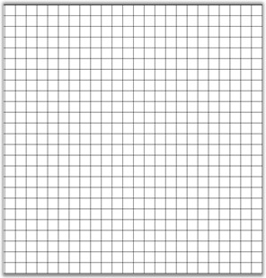

Diagram Grid is drawn with evenly spaced points that provides a visual guidance to the user.
Behavior
Draws a matrix of evenly spaced points in the view, and provides snap to the grid calculations.
Class Reference
It is a property of Diagram.View class and its return type is Syncfusion.Windows.Forms.Diagram.LayoutGrid.
Properties
|
Properties |
Description |
|
Color |
Color used for drawing the grid. It accepts System.Color value. |
|
ContainerView |
Gets or sets the view that this grid is attached to. |
|
DashOffset |
Distance from the start of the line to the dash pattern. It accepts Float value. |
|
DashStyle |
Style used for dashed lines. It accepts System.Drawing.Drawing2D.DashStyle value. |
|
GridStyle |
Gets or sets the appearance of the grid. It is GridStyle enumerator type value. |
|
HorizontalSpacing |
Determines the horizontal distance between grid points. It accepts float value. |
|
MinPixelSpacing |
Indicates minimum spacing between grid points in device units. It accepts Float value. |
|
SnapToGrid |
Adjust the node with nearest grid point. Specifies whether the snap to grid feature is enabled. It accepts Boolean value (true or false). |
|
VerticalSpacing |
Determines the vertical distance between grid points. It accepts Float value. |
|
Visible |
Specifies whether the grid is visible. It accepts Boolean value (true or false). |
|
[C#]
diagram1.View.Grid.GridStyle = GridStyle.Line; diagram1.View.Grid.DashStyle=System.Drawing.Drawing2D.DashStyle.Dot; diagram1.View.Grid.Color = Color.LightGray diagram1.View.Grid.VerticalSpacing = 15; diagram1.View.Grid.HorizontalSpacing = 15; diagram1.View.Grid.Visible = false; diagram1.View.Grid.SnapToGrid = true; |

Figure 44: Diagram Grid